Development Skills.
There are essential development skills that must be mastered in this class.
Each of these skills can be demonstrated by a screen shot of your computer
system.
Skill #1 - Web Hosting
- Sign Up for Bluehost
- Register your domain with Sensei Server
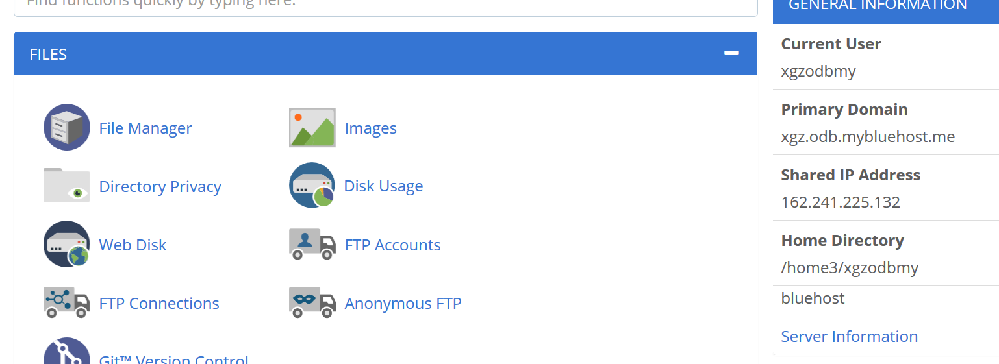
- WordPress Profile page
- WordPress configured
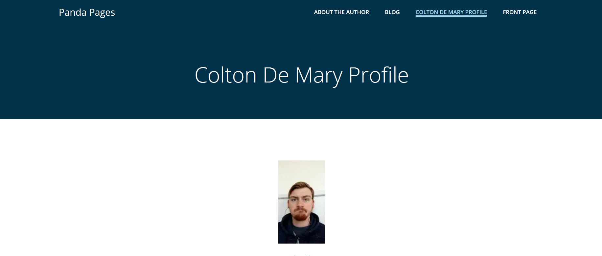
Skill #2 - FTP
- Sign into filezilla
- set up directories for computer and remote site
- transfer files
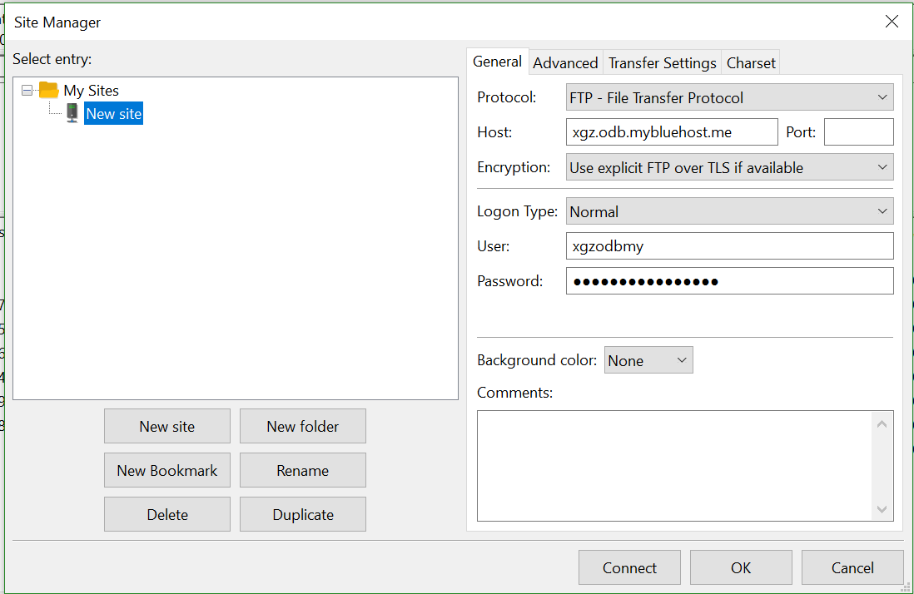
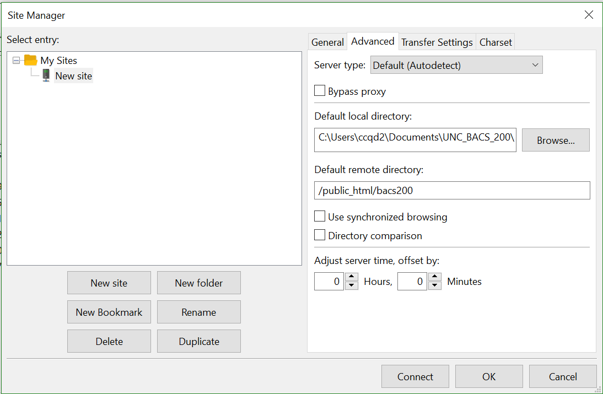
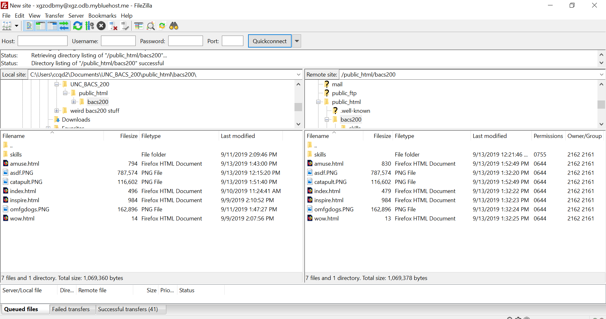
Skill #3 - Brackets
- Download brackets
- set up directories for files
- begin coding
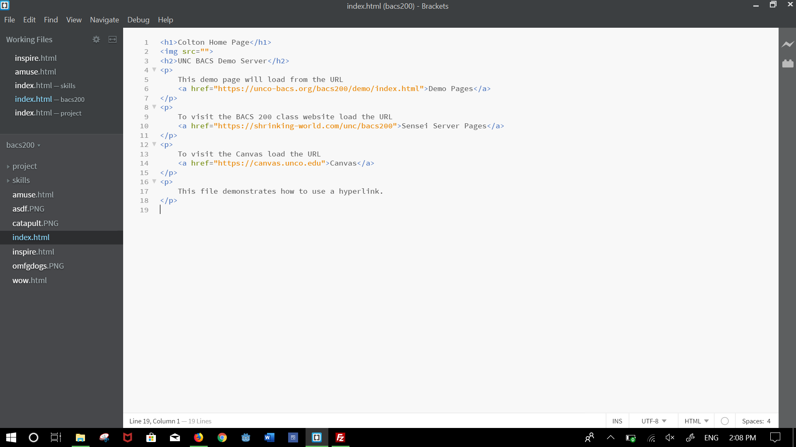
Skill #4 - URL Game
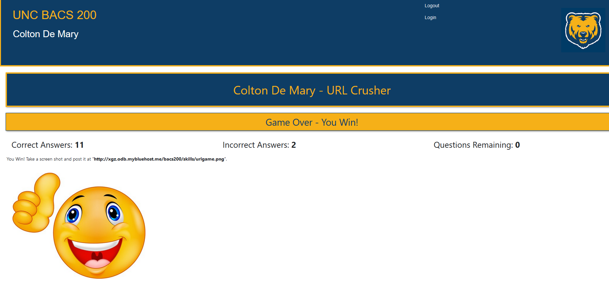
Skill #5 - Validator
- create link to validator
- validate bacs200/inde.html
- create validator link for bacs200/index.html
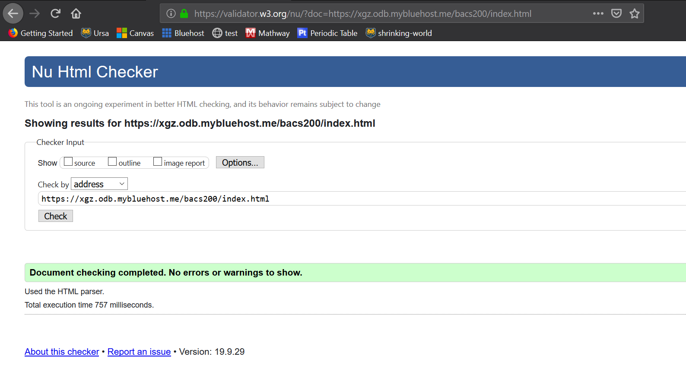
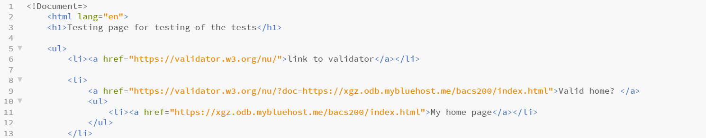
Skill #6 - Developer tools
- open dev tools in firefox (f12)
- take a picture of dev tools open

Skill #7 - templates
- create link to validator
- validate bacs200/inde.html
- create validator link for bacs200/index.html
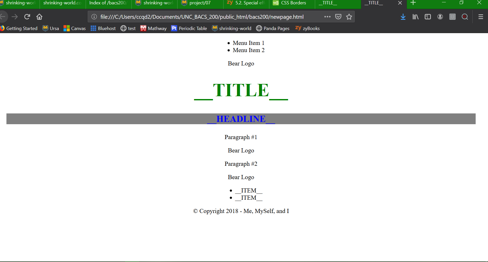


Skill #8 - Using Bootstrap
- copy template from demo #20
- create bootstrap.html
- copy template from demo #21
- create tabs.html
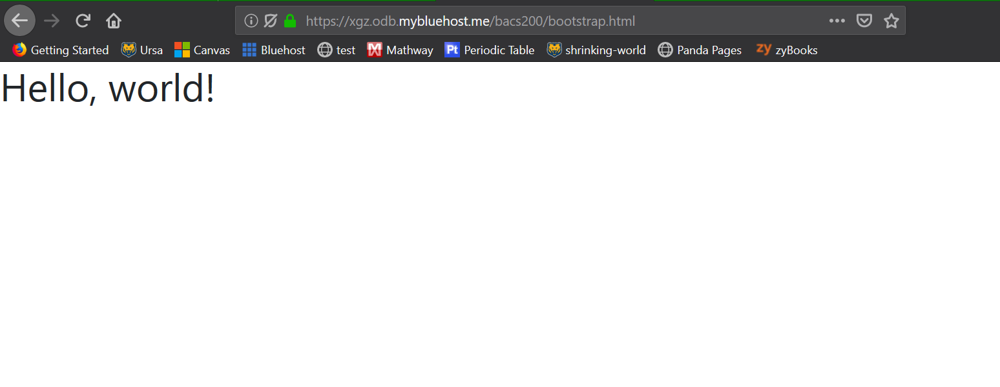
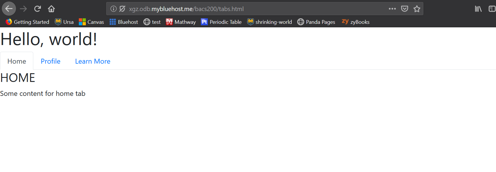
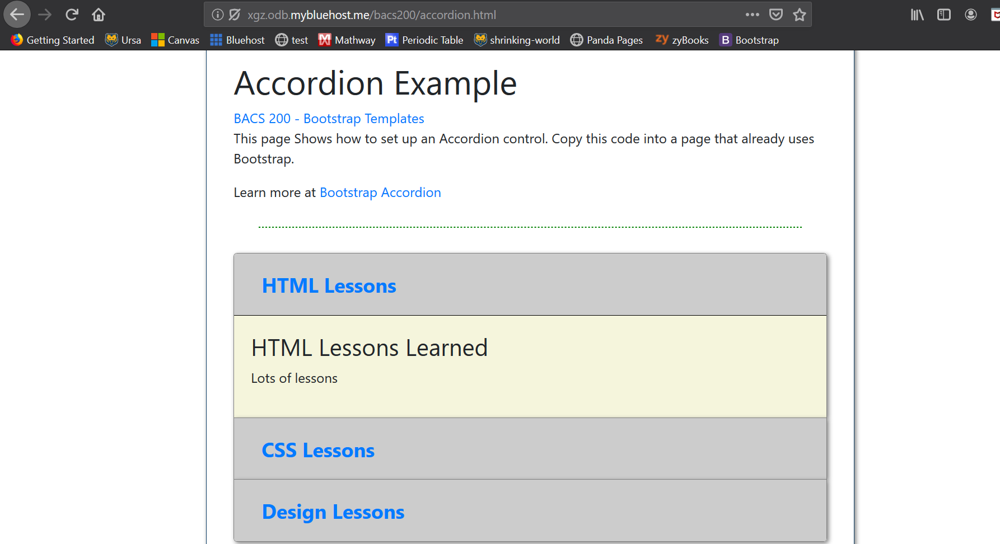